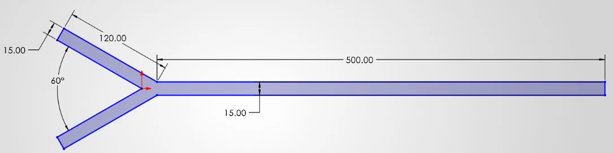
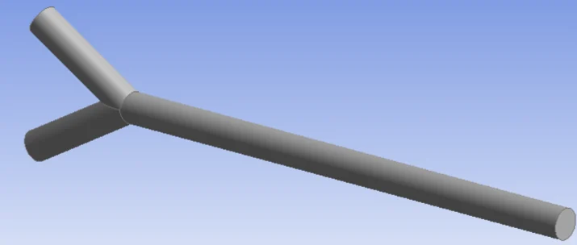
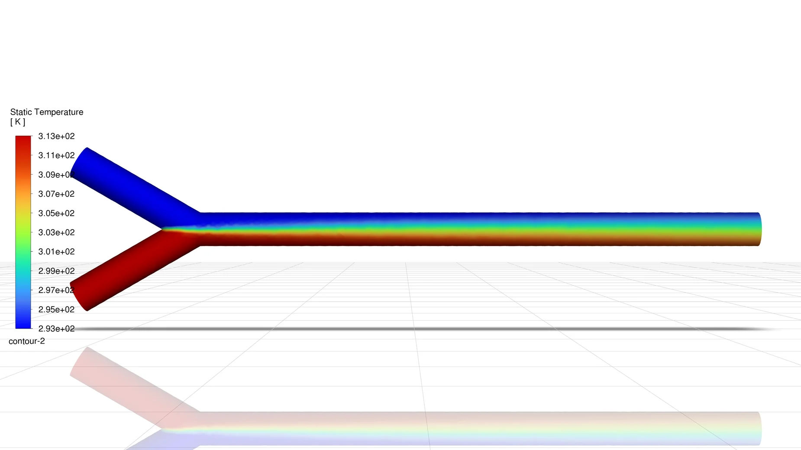
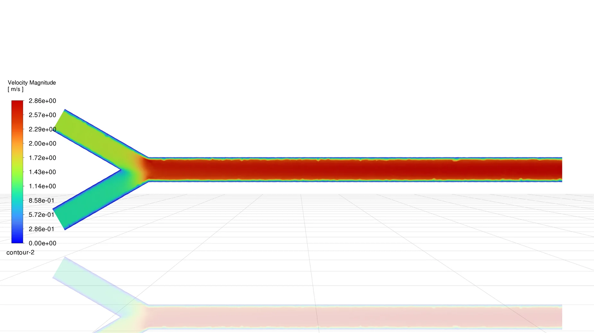
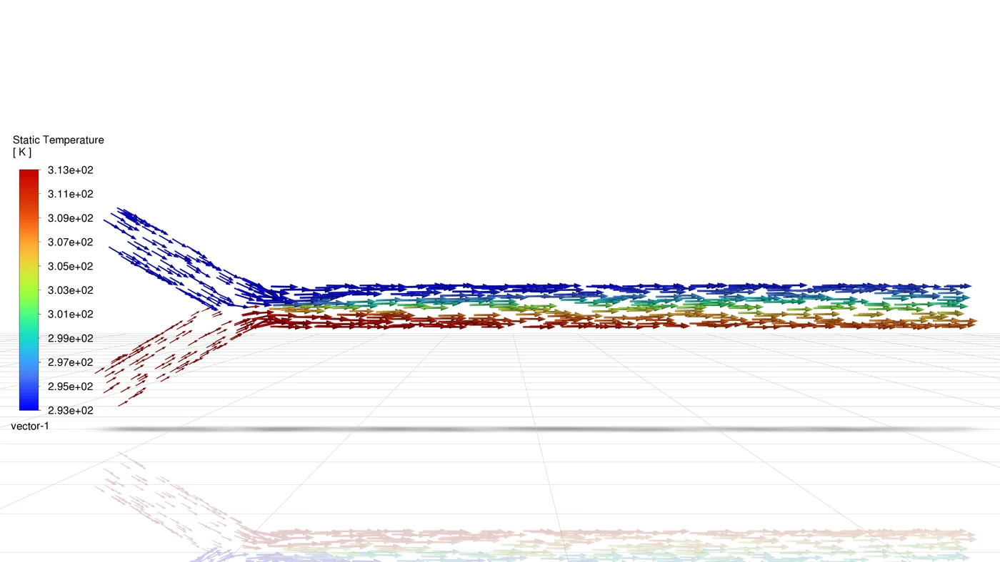
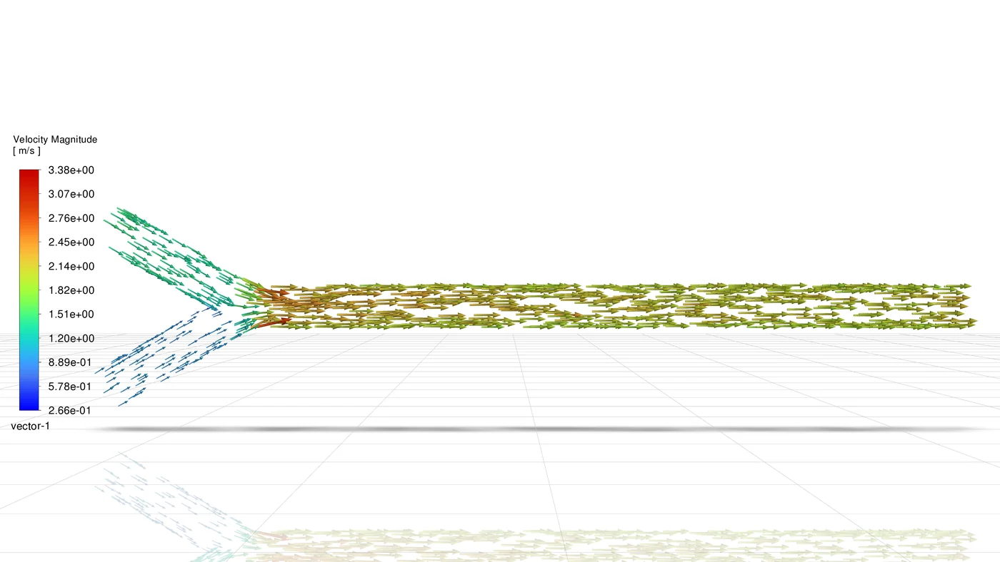

01 / Engineering objective
Examine how two inlet streams with different temperatures and velocities combine in a shared outlet channel.
The submitted lab report describes a Y-junction with a hotter lower inlet and a colder upper inlet. As the water streams meet, the model visualizes the temperature interface and changes in the flow field along the outlet.


02 / Boundary conditions & modelling steps
| Boundary | Temperature | Inlet velocity |
|---|---|---|
| Lower inlet · Hot water | 313 K (39.85°C) | 1.0 m/s |
| Upper inlet · Cold water | 293 K (19.85°C) | 1.5 m/s |
| Shared outlet | Combined downstream flow | |
03 / Original CFD results




04 / Observations & study limitations
The temperature plot shows two distinct inlet-temperature regions that transition into a downstream temperature field. The velocity plot and vectors show the change in flow direction as the streams merge into the common outlet.
These plots demonstrate the CFD workflow and help illustrate convection and thermal mixing. The supplied study provides qualitative contour plots rather than a quantified mixing-uniformity analysis, so no numerical mixing-efficiency claim is made here.